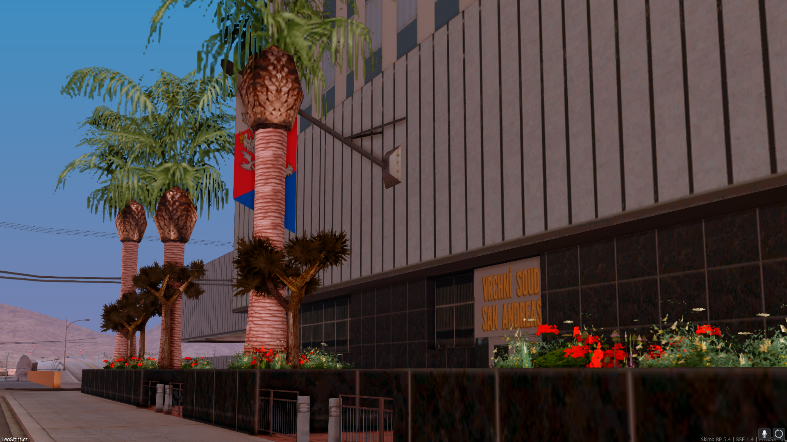

Independent Insights
Články
Rozhovory
O nás
Kontakt
Kongresmani platí za své činy. Předsedkyně si neuhlídala rozpočet a tak za byty v Blueberry ze svých kapes dají bezmála 4 a čtvrt milionu.
Aktualizace 24. 07. 2024 10:45
23. 07. 2024 • Všichni dělají chyby. A to i několikaměsíční předsedkyně kongresu Elizabeth Hawkins. Ta si nepohlídala výdaje za výběrové řízení a za zařizování nových bytových prostor musí ona i její kolegové platit...
Celý článek

Večer ve znamení soudnictví. 3 soudy za sebou a 4. ke spaní. V hlavní roli soudce Levin a advokát Badinský.
23. 07. 2024 • Píše se 20. den letošního července a přichází na řadu jedna z nejčetnějších sérií sporných řízení v našem státě. V hlavních rolích soudce Vrchního soudu, JUDr. Alexander Levin Ph.D. a advokát JUDr. Dušan Badinský...
Celý článek
Ustanovující zasedání kongresu za období červenec. Stále žádný předseda, zvýšení bezpečnosti kongresu a dotace technickým službám.
12. 07. 2024 • Dne 11. července, v 18 hodin začalo ustanovující zasedání kongresu za období červenec. Ve vzduchu bylo jasně cítit napětí, co z přítomných kongresmanů vzejde po téměř dvou týdnech od začátku měsíce...
Celý článek
Červencové volby do kongresu skončily. Téměř většinu získali kandidáti z řad Policie San Andreas.
10. 07. 2024 • Tyto volby přinesly něco, co stát ještě nezažil - nutnou anulaci a opakování voleb. Stalo se tak na úkor několika kandidátů, kteří ve stejných okresech měli identický počet hlasů. Zákonem tato skutečnost ošetřena není...
Celý článek
Děláme svět informovanějším místem © 2024 Copyright Independent Insights